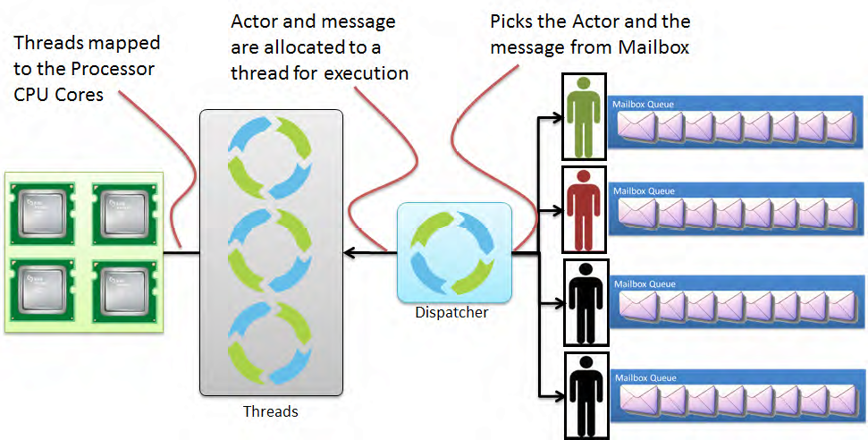

TypeSafe Activator
Table of Contents
1 TypeSafe Activator: Akka Get Started
- Activator Reactive (= Concurrency + events) Application Developer Environment
- Include several examples: src code + tutorials
- Covers: Scala, Actors, and Akka Runtime
- http://www.typesafe.com/platform/getstarted "The best way to start learning Akka …"
1.1 Activator Practical Details
- Activator is web browser based application.
% activator uiwill bring up a browser based UI. Without theuiargument, yiu get a cli.%is my shell prompt. - Using remotely:
ssh 130.108.17.112 % activator ui -Dhttp.address=130.108.17.112-Dhttp.port=8080-Dbrowser=/usr/bin/google-chromeif you wish to provide more control.- Copies/Creates its applications in
~/.activator/and~
1.2 Akka, without Activator, Practical Details
Akka can be used without defining a configuration, since sensible default values are provided.
// application.conf at the root of the class path. akka { loggers = ["akka.event.slf4j.Slf4jLogger"] loglevel = "DEBUG" stdout-loglevel = "WARNING" actor { provider = "akka.cluster.ClusterActorRefProvider" default-dispatcher { # set to 1 for as fair as possible throughput = 10 } } remote { netty.tcp.port = 2552 } }
2 What is Akka?
- Akka is an implementation of Hewitt's Actor Model, in Scala (and hence JVM). It makes practical concessions to the pure actor model.
- "Akka is a toolkit and runtime for building highly concurrent, distributed, and fault tolerant event-driven applications on the JVM" http://www.akka.io. [Note the use of concurrent and distributed.]
- Helps with scaling both UP (utilizing multi-core processors) and OUT (utilizing the cloud/ grid/ cluster).
- http://www.typesafe.com/platform/getstarted "The best way to start learning Akka …"
2.1 What is Akka? v.Frivolous
- https://www.google.com/search?q=akka+mountain
- https://www.google.com/search?q=akka+finnish+goddess&safe=active
- https://www.google.com/search?q=akka+indian&safe=active
- https://www.google.com/search?q=akka+telugu&safe=active
- Should we give equal time to Bing, Yahoo, DuckDuckGo?
2.2 Who Is Using Akka?
Figure 1: Who Is Using Akka?
2.3 What is Akka? v.nonFrivolous
- Includes an implementation of Actor Model, with improvements for practicality.
- Also includes Software Transactional Memory (STM).
- Event driven, middleware framework
- Part of Typesafe Stack. Open source, Apache License.
- Created by Jonas Bonér.
2.4 Akka Practical Use Overview
- Versions: Scala 2.11+, Akka 2.3.1+. Code for older versions may not work with these versions. Most, not 100%, is open source.
- The code shown in boxes below is not always self-contained enough to compile it stand-alone.
scala.actoris deprecated. Caution: Many articles on the web are based on scala.actor. Useimport akka.actor. http://docs.scala-lang.org/overviews/core/actors-migration-guide.html- Akka library can be used in Java as well. http://www.pykka.org/ with Python.
2.5 How Does Akka work?

Figure 2: How Does Akka work?
3 Link to a Full Lecture
4 References
- http://akka.io/docs/akka/snapshot/AkkaScala.pdf about 360 pages. Nearly all the code snippets and figures are from here. Reference.
- Jonas Biner, "Above the Clouds: Introducing Akka", 2011. Web search for "Above the Clouds: Introducing Akka". Video or pdf. Highly recommended.